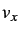
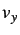

Next: Usage of iGMT
Up: Datasets handled by iGMT
Previous: Raster data
Contents
Some example handling procedures for polygon data are included as well:
- Plate boundary data:
- The plate boundaries as given by
DeMets et al. (1990) are part of the iGMT distribution as the file nuvel.yx in a slightly modified form. Any polygon data file
supported by psxy can be substituted for this data set.
- Hotspot locations:
- iGMT uses a list of hotspots compiled by
Steinberger (2000) to plot their location and a name tag, if
selected.
- Volcano locations:
- The Smithsonian Institution Global Volcanism
Program's list of volcanoes (Simkin and Siebert, 1994) is supported
in the form found at
http://www.volcano.si.edu/gvp/volcdata/index.htm.
As for the hotspot data, the user can select a symbol, the color and
toggle a name tag. A version of this list as of April 1998 is
included. If you want to install an update, just download the data
from the web and replace the adequate file. The same holds true for
the earthquake catalogs since iGMT was programmed to handle the
original data.
- CMT fault plane solutions:
- iGMT uses psvelomeca from the
GMT supplements package to plot the double couple part of the
Harvard CMT centroid moment tensor solutions (e.g. Dziewonski and Woodhouse, 1983) as found at
http://www.seismology.harvard.edu/CMTsearch.html.
A list of all events in the catalog of the first 60 days of 1998 is
included as an example.
- Significant earthquakes:
- Dunbar et al. (1997) have compiled a list
of significant earthquakes starting 2000 B.C., their catalog is accessible at
http://www.ngdc.noaa.gov/seg/hazard/sigintro.html.
After
quoting all lines without data by inserting a hash sign ("# "), the
format produced by this engine can be read directly into iGMT.
(Internally, all that iGMT does is to use awk to check if lines are
quoted and for exporting of the relevant columns.) iGMT plots only
earthquakes that have a magnitude assigned, you might want to change
the relevant awk lines in igmt_plotting.tcl.
- PDE earthquakes:
- The United States Geological Survey keeps
different hypocenter catalogs at the National Earthquake Information
Center
URL: http://wwwneic.cr.usgs.gov/neis/epic/epic_global.html).
The ``Screen File Format'' can be read by iGMT.
- Slab contours:
- Gudmundsson and Sambridge (1998) define contours of the
upper edge of subducting slabs from the relocated hypocentres of
Engdahl et al. (1998).
These seismicity contours are available from
http://rses.anu.edu.au/seismology/projects/RUM/rum_download.html,
we have included them in a format readable by GMT.
- Velocity vectors:
- Simon McClusky provided a routine that
handles velocity solution plotting using psvelomeca. A typical
application would be the mapping of results from GPS studies such as
the gps.vel global data example we have included.
- Vector fields:
- Given two user-supplied GMT grd files with
 and  components of a vector field , iGMT plots this
field using grdvector.9 You can change the color and width of the
vectors via the normal color and linewidth menus for polygon data.
Additional parameters can be changed under ``Data
parameters''/``Vector field parameters''.
- World Stress Map:
- The World Stress Map (WSM) Project
(e.g., Reinecker et al., 2003; Müller et al., 2000; Zoback, 1992),
http://www.world-stress-map.org,
compiles stress measurements all
over the world. We supply a routine that can read the WSM's ASCII
format data base (Müller et al., 2000,1997a).10 It plots either only the compressive directions of the horizontal
stress regime (as it is commonly done), or different style vector
pairs on basis of the focal mechanism classification for the
horizontal plane projection. The different vector style plots two
equal length vectors (one compressional, one extensional) if the
focal mechanism is labeled ``strike-slip'', one compressional
(extensional) vector if the focal mechanism is purely compressional
(extensional), and it uses one half-length and one full length
vector for compressional or extensional mechanisms with a
strike-slip component in the horizontal plane.
- Major cities:
- We have supplied a (rather inaccurate) data set
of 726 cities with their names and locations. This data set can be
restricted to the major 235 cities. The corresponding data sets are
wcity.dat and wcity_major.dat (the latter is a subset
of the full data set).
- Custom ``xys'' files:
- iGMT can plot two custom ASCII data files
specified by the user. They have to be in a columnar ASCII format
(separator is a white space or tab, comment lines can be introduced
by a number sign, ``#''), similar to the polygon data described
above, and need at least longitude and latitude in every line. Size
values can be given optionally, hence ``xys''. (For instance, for
earthquakes hypocentres you would give longitude, latitude, and
magnitude. The magnitude will be used to scale each symbol that is
plotted on your map. To change all symbol sizes in an absolute
sense, you can choose sizes polygon data in the Data
parameters menu. When you use polygon drawing by choosing
``line'' or ``close polygon'' as a symbol in Symbols polygon
data for your polygon file, the sizes polygon data item
will change the width of the line.) GMT type polygon files where
individual polygons are separated by an ``>'' sign in a single line
are supported.
You can interactively choose the column numbers (ie., use the eight
and ninth column instead of the first and second) which hold the x
and y values, if you leave the column number for size blank,
xy-plotting is assumed. The magnification factor is a
pre-multiplier for the size entry that is later modified by the
standard size of the symbols (see also section 6.2).
Technical details how these files are handled are explained later in
the text and in the comments found in igmt_plotting.tcl. You
might also wish to refer to the iGMT web site where you can find a
more detailed description
of the datasets listed above and links to the sites providing the data:
http://www.seismology.harvard.edu/ becker/igmt/
becker/igmt/
In addition, this is where you can obtabin the plate velocity and
potential field grids mentioned above.
Next: Usage of iGMT
Up: Datasets handled by iGMT
Previous: Raster data
Contents
Thorsten Becker
2004-03-04